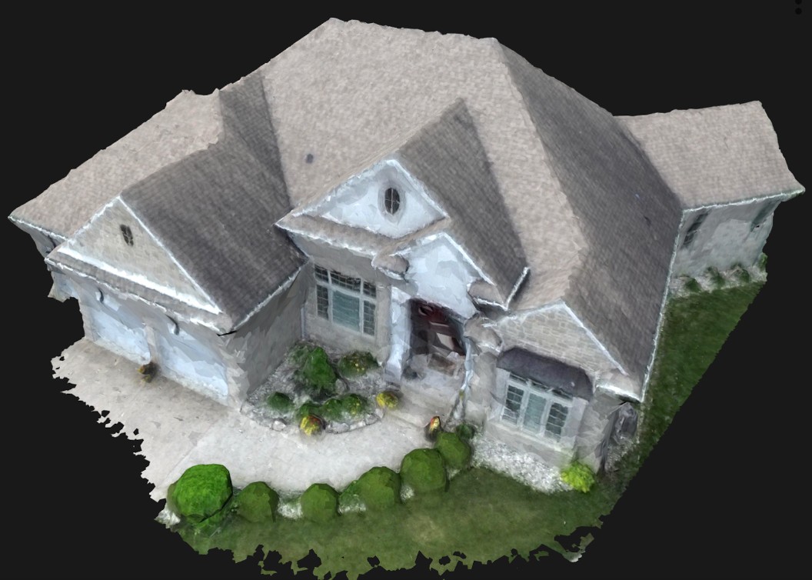

Motorcycle logger
Custom logger and display gadget with 3D printed case in Carbon Fiber filament, mounted on the front of the bike that displays the EPA UDDS drive cycles to the test driver, records bike's motor controller information through a CAN port and uses a low-pass filter to read the voltage from the bike's battery. Communicates with an app I made to display real-time information to test-driver or another person.

Prototype controller and board of logger
Prototype controller for custom motorcycle dynamometer, including: ESP 32 microcontroller programmed in C++, two CAN shields, display, SD card shield, two PWM to analog outputs and space to solder two analog manual inputs that control the throttle on the bike and the load on the dynamometer.

Electric Motor test bench
Use of custom and propietary controllers to compare performance and efficiency under controlled loads, reducing assembly and quality control times. Moreover this setup enabled the study of resonant frequencies and mechanical losses as a function of speed, giving a more accurate and precise model of estimating efficiencies in the engines.

Heat transfer simulations
Detailed heat transfer analysis. Applied into Critical Design Reviews (CDR) and relevant product and engineering decisions for Design and Manufacturing II, senior-level classwork. In this example I estimated the surface teperature of a 1800 CC custom V-twin engine under natural convection.

Preliminary CFD simulations
CFD simulations for rapid product development (RPD) techniques such as preliminary design reviews (PDR). In this example I used a CFD simulation of a prototype airpllane to find possible sources of turbulent flow and estimate the drag force at cruise conditions. As part of my own research for "Aerospace Design", a senior-level class.

Washing machine concept for less developed countries
Team project oriented to design a device on Solidworks with a social purpose. I was the project leader in charge of manufacturing decisions, gear power system, CAD assembly. Full Presentation.

Extract from concept of operations

Technical drawing example
Polyethylene blowmold for drum of washing machine, secured by water-tight rivets to the metal skeleton of the washing machine, integrating different material components into a single feasible proof-of-concept.

Mock Mission proposal for program L'Space Summer 2021
I lead propulsion research and CAD design, researched trajectories, COO (concept of operations) and observation instruments. I also designed 3D model of the BIT-3 ion propulsion engine based on manufacturer's information. Full Team Mission Proposal.

National Rocketry Association Level 1 Certification Rocket
In 2021, I designed, simulated, manufactured, and launched a personal rocket that reached 2400 feet.

3D visualization of homes for Accurate Solar System Designs
During my time at Monalee, I worked with the Software Engineering team and delievered a step-by-step process for taking high quality images with drones and turning them into 3D accurate visualizations of homes for their marketing gigs and automated solar system design project, unique in the solar system design busines.
Example of libraries used in Python Colab:
numpy
matplotlib.pyplot
google.colab
CoolProp.CoolProp
pandas
mpl_toolkits.mplot3d
In this project I used the open-source alternative "Coolprop" to find gas properties of CO2 through different stages in a geothermal generation system, as part of my senior level coursework. Full Google Colab file.


{kind=link}